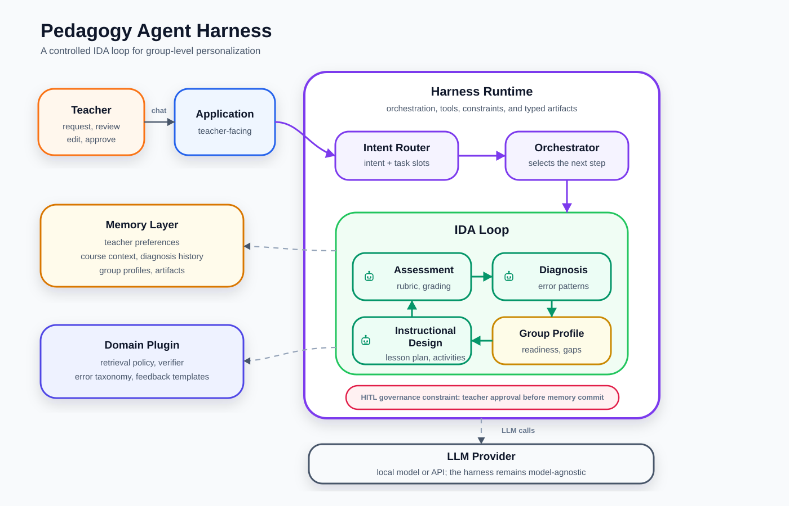

<!DOCTYPE html>
<html lang="vi">
<head>
<meta charset="UTF-8">
<title>Master Thesis Proposal</title>
<style>
  * { box-sizing: border-box; margin: 0; padding: 0; }

  body {
    background: #f0f2f5;
    display: flex;
    flex-direction: column;
    align-items: center;
    justify-content: center;
    height: 100vh;
    font-family: 'Segoe UI', system-ui, sans-serif;
  }

  #slide {
    width: 92vw;
    height: 88vh;
    background: #fff;
    border-radius: 16px;
    box-shadow: 0 8px 40px rgba(0,0,0,0.12);
    padding: 52px 64px;
    overflow-y: auto;
    display: flex;
    flex-direction: column;
    gap: 0;
    position: relative;
  }

  /* ── accent bar at top ── */
  #slide::before {
    content: '';
    position: absolute;
    top: 0; left: 0; right: 0;
    height: 6px;
    background: linear-gradient(90deg, #4f46e5, #06b6d4, #10b981);
    border-radius: 16px 16px 0 0;
  }

  /* ── slide header ── */
  .s-label {
    font-size: 0.72rem;
    font-weight: 700;
    letter-spacing: 2px;
    text-transform: uppercase;
    color: #6366f1;
    margin-bottom: 10px;
  }

  .s-title {
    font-size: 2rem;
    font-weight: 800;
    color: #0f172a;
    line-height: 1.2;
    margin-bottom: 28px;
  }

  .s-title .accent { color: #4f46e5; }

  /* ── body text ── */
  .s-body { display: flex; flex-direction: column; gap: 16px; flex: 1; }

  p { font-size: 1.05rem; line-height: 1.75; color: #334155; }

  strong { color: #0f172a; font-weight: 700; }

  em { color: #6366f1; font-style: normal; font-weight: 600; }

  code {
    background: #ede9fe;
    color: #4f46e5;
    padding: 1px 6px;
    border-radius: 4px;
    font-size: 0.9em;
    font-family: 'Cascadia Code', 'Fira Code', monospace;
  }

  /* ── cards / pill-list ── */
  .card-row {
    display: flex;
    gap: 14px;
    flex-wrap: wrap;
  }

  .card {
    flex: 1 1 180px;
    background: #f8fafc;
    border: 1.5px solid #e2e8f0;
    border-radius: 12px;
    padding: 16px 18px;
    display: flex;
    flex-direction: column;
    gap: 6px;
  }

  .card .card-icon { font-size: 1.4rem; }
  .card .card-label { font-size: 0.75rem; font-weight: 700; letter-spacing: 1px; text-transform: uppercase; color: #94a3b8; }
  .card .card-text { font-size: 0.95rem; color: #1e293b; line-height: 1.5; }

  .card.blue  { border-color: #bfdbfe; background: #eff6ff; }
  .card.indigo{ border-color: #c7d2fe; background: #eef2ff; }
  .card.teal  { border-color: #99f6e4; background: #f0fdfa; }
  .card.violet{ border-color: #ddd6fe; background: #f5f3ff; }
  .card.rose  { border-color: #fecdd3; background: #fff1f2; }
  .card.amber { border-color: #fde68a; background: #fffbeb; }

  /* ── pill list ── */
  .pill-list { display: flex; flex-direction: column; gap: 10px; }

  .pill {
    display: flex;
    align-items: flex-start;
    gap: 12px;
    background: #f8fafc;
    border-radius: 10px;
    padding: 12px 16px;
    border-left: 4px solid #e2e8f0;
    font-size: 1rem;
    color: #334155;
    line-height: 1.6;
  }

  .pill.ind  { border-color: #6366f1; }
  .pill.teal { border-color: #14b8a6; }
  .pill.blue { border-color: #3b82f6; }
  .pill.rose { border-color: #f43f5e; }
  .pill.amber{ border-color: #f59e0b; }
  .pill.green{ border-color: #22c55e; }
  .pill.violet{border-color: #8b5cf6; }

  .pill-dot {
    width: 8px; height: 8px;
    border-radius: 50%;
    margin-top: 8px;
    flex-shrink: 0;
  }
  .ind   .pill-dot { background: #6366f1; }
  .teal  .pill-dot { background: #14b8a6; }
  .blue  .pill-dot { background: #3b82f6; }
  .rose  .pill-dot { background: #f43f5e; }
  .amber .pill-dot { background: #f59e0b; }
  .green .pill-dot { background: #22c55e; }
  .violet .pill-dot{ background: #8b5cf6; }

  /* ── formula block ── */
  .formula {
    background: linear-gradient(135deg, #4f46e5 0%, #06b6d4 100%);
    border-radius: 14px;
    padding: 20px 32px;
    text-align: center;
    color: #fff;
    font-size: 1.5rem;
    font-weight: 800;
    letter-spacing: 1px;
  }

  /* ── section label badge ── */
  .badge {
    display: inline-block;
    padding: 3px 12px;
    border-radius: 999px;
    font-size: 0.78rem;
    font-weight: 700;
    letter-spacing: 0.5px;
    margin-bottom: 6px;
  }
  .badge-indigo { background: #eef2ff; color: #4f46e5; }
  .badge-teal   { background: #f0fdfa; color: #0d9488; }
  .badge-rose   { background: #fff1f2; color: #e11d48; }
  .badge-amber  { background: #fffbeb; color: #d97706; }
  .badge-blue   { background: #eff6ff; color: #2563eb; }

  /* ── divider ── */
  .divider { border: none; border-top: 1.5px solid #e2e8f0; margin: 8px 0; }

  /* ── two-col layout ── */
  .two-col { display: grid; grid-template-columns: 1fr 1fr; gap: 20px; }

  /* ── counter ── */
  #counter {
    margin-top: 10px;
    font-size: 0.78rem;
    color: #94a3b8;
    letter-spacing: 1px;
    font-weight: 600;
  }

  /* ── TOC special ── */
  .toc-grid {
    display: grid;
    grid-template-columns: 1fr 1fr;
    gap: 12px;
    margin-top: 4px;
  }

  .toc-item {
    display: flex;
    align-items: center;
    gap: 12px;
    background: #f8fafc;
    border: 1.5px solid #e2e8f0;
    border-radius: 10px;
    padding: 14px 16px;
  }

  .toc-num {
    width: 32px; height: 32px;
    border-radius: 8px;
    display: flex; align-items: center; justify-content: center;
    font-weight: 800; font-size: 0.9rem;
    flex-shrink: 0;
    color: #fff;
  }

  .toc-text { font-size: 0.95rem; color: #1e293b; font-weight: 500; }

  .n1 { background: #4f46e5; }
  .n2 { background: #06b6d4; }
  .n3 { background: #10b981; }
  .n4 { background: #f59e0b; }
  .n5 { background: #f43f5e; }
  .n6 { background: #8b5cf6; }
  .n7 { background: #64748b; }
  .n8 { background: #0ea5e9; }

  /* scrollbar */
  #slide::-webkit-scrollbar { width: 4px; }
  #slide::-webkit-scrollbar-track { background: transparent; }
  #slide::-webkit-scrollbar-thumb { background: #cbd5e1; border-radius: 4px; }
</style>
</head>
<body>
<div id="slide"></div>
<div id="counter"></div>

<script>
const slides = [
  /* ── 0 — Title ── */
  {content: `
    <div class="s-label">Master Thesis · 2026</div>
    <div class="s-title">Ứng dụng mô hình Multi-Agent Agentic RAG<br>trong <span class="accent">đào tạo và hướng dẫn kỹ thuật</span></div>
    <p style="font-size:1.25rem;color:#64748b;margin:-18px 0 18px;font-style:italic">Kiến trúc và Hiện thực Pedagogy Agent Harness hỗ trợ Giáo viên trong Thiết kế Giảng dạy và Đánh giá</p>
    <div class="toc-grid">
      <div class="toc-item"><div class="toc-num n1">1</div><div class="toc-text">Motivation & Problem Statement</div></div>
      <div class="toc-item"><div class="toc-num n2">2</div><div class="toc-text">Proposed Method</div></div>
      <div class="toc-item"><div class="toc-num n3">3</div><div class="toc-text">Use Cases</div></div>
      <div class="toc-item"><div class="toc-num n4">4</div><div class="toc-text">Research Questions</div></div>
      <div class="toc-item"><div class="toc-num n5">5</div><div class="toc-text">Evaluation Approach</div></div>
      <div class="toc-item"><div class="toc-num n6">6</div><div class="toc-text">Contributions</div></div>
      <div class="toc-item"><div class="toc-num n7">7</div><div class="toc-text">Scope & Limitations</div></div>
      <div class="toc-item"><div class="toc-num n8">8</div><div class="toc-text">Thesis Outlines</div></div>
    </div>
  `},

  /* ── 1 — Motivation 1/3 ── */
  {content: `
    <div class="s-label">1 · Motivation · 1 / 3</div>
    <div class="s-title">Vấn đề: LLM đơn thuần<br>không đủ cho sư phạm</div>
    <div class="s-body">
      <div class="pill-list">
        <div class="pill rose"><div class="pill-dot"></div><div>Giáo viên dành phần lớn thời gian ngoài giờ lên lớp cho tác vụ lặp lại: soạn kế hoạch bài dạy, xây dựng rubric, tạo đề, chấm bài và viết feedback.</div></div>
        <div class="pill amber"><div class="pill-dot"></div><div>LLM có năng lực ngôn ngữ đủ mạnh, nhưng đơn thuần là <strong>stateless</strong> — mỗi phiên làm việc bắt đầu lại từ đầu; hiệu quả phụ thuộc vào khả năng viết prompt, không phải năng lực sư phạm.</div></div>
        <div class="pill blue"><div class="pill-dot"></div><div>ChatGPT, Gemini bổ sung lịch sử hội thoại nhưng vẫn tối ưu cho <strong>Q&A tổng quát</strong> — không có khái niệm khoá học, nhóm học sinh hay tiến trình dạy học.</div></div>
      </div>
    </div>
  `},

  /* ── 2 — Motivation 2/3 ── */
  {content: `
    <div class="s-label">1 · Motivation · 2 / 3</div>
    <div class="s-title">Xu hướng: <span class="accent">Harness</span></div>
    <div class="s-body">
      <p>Các công cụ chuyên dụng bọc LLM bằng một <strong>execution environment</strong> phù hợp với từng domain — còn gọi là <em>harness</em> (thuật ngữ 2026).</p>
      <p>Harness tích hợp: prompt/context engineering · RAG · tool use · agentic loop · memory · multi-agent orchestration.</p>
      <div class="card-row" style="margin-top:8px">
        <div class="card indigo">
          <div class="card-icon">💻</div>
          <div class="card-label">Claude Code / Codex</div>
          <div class="card-text">LLM + file system, terminal, coding workflow</div>
        </div>
        <div class="card blue">
          <div class="card-icon">🎨</div>
          <div class="card-label">Claude Design</div>
          <div class="card-text">LLM + design canvas, design system</div>
        </div>
        <div class="card teal">
          <div class="card-icon">🔬</div>
          <div class="card-label">NotebookLM / Perplexity</div>
          <div class="card-text">LLM + grounding, citation</div>
        </div>
      </div>
      <p>Mỗi công cụ mạnh không vì LLM tốt hơn, mà vì <strong>harness khớp đặc thù lĩnh vực</strong>.</p>
      <div class="formula">Agent = Model + Harness</div>
    </div>
  `},

  /* ── 3 — Motivation 3/3 ── */
  {content: `
    <div class="s-label">1 · Motivation · 3 / 3</div>
    <div class="s-title">Khoảng trống: sư phạm cần<br><span class="accent">IDA Loop</span></div>
    <div class="s-body">
      <p>Cá nhân hoá trong sư phạm là một <strong>vòng lặp có chủ đích</strong>, không phải tác vụ đơn lẻ:</p>
      <div class="card-row">
        <div class="card rose"><div class="card-icon">📊</div><div class="card-text">1. Đánh giá học sinh</div></div>
        <div class="card amber"><div class="card-icon">🔍</div><div class="card-text">2. Phát hiện điểm mạnh / yếu</div></div>
        <div class="card indigo"><div class="card-icon">📝</div><div class="card-text">3. Điều chỉnh kế hoạch dạy học</div></div>
        <div class="card teal"><div class="card-icon">🚀</div><div class="card-text">4. Triển khai → đánh giá lại</div></div>
      </div>
      <div class="formula">IDA Loop — Instructional Design–Assessment Loop</div>
      <p>Harness tổng quát không được thiết kế cho đặc thù sư phạm và không đạt mức cần thiết. <strong>Đó là khoảng trống luận văn này giải quyết.</strong></p>
    </div>
  `},

  /* ── 4 — Proposed Method overview (image) ── */
  {content: `
    <div class="s-label">2 · Proposed Method · 1 / 3</div>
    <div class="s-body" style="gap:12px">
      
    </div>
  `},

  /* ── 5 — Proposed Method 2/3 ── */
  {content: `
    <div class="s-label">2 · Proposed Method · 2 / 3</div>
    <div class="s-title">Memory &amp; Orchestration</div>
    <div class="s-body">
      <div class="pill-list">
        <div class="pill ind"><div class="pill-dot"></div><div>
          <strong>Memory layer</strong> — ánh xạ scope sư phạm lên memory taxonomy:<br>
          <em>Semantic</em>: chuẩn chương trình, kiến thức môn học, preferences giáo viên.<br>
          <em>Episodic</em>: lịch sử chẩn đoán, hồ sơ nhóm tích luỹ theo khoá học.<br>
          <em>Working</em>: ngữ cảnh tác vụ hiện tại. Harness tự động inject đúng tầng.
        </div></div>
        <div class="pill teal"><div class="pill-dot"></div><div>
          <strong>Orchestration</strong> — vận hành IDA Loop với workflow có cấu trúc. Bốn sub-agent:<br>
          Orchestrator · Diagnosis Agent · Instructional Design Agent · Assessment Agent
        </div></div>
      </div>
    </div>
  `},

  /* ── 6 — Proposed Method 3/3 ── */
  {content: `
    <div class="s-label">2 · Proposed Method · 3 / 3</div>
    <div class="s-title">Tools, Sandbox<br>&amp; HITL Governance</div>
    <div class="s-body">
      <div class="pill-list">
        <div class="pill blue"><div class="pill-dot"></div><div>
          <strong>Tools &amp; sandbox</strong> — retriever có Bloom-aligned metadata, profile synthesizer, domain verifier.<br>
          Mở rộng qua <em>pedagogy domain plugin</em> — plugin đưa tool mới vào và thực thi trong sandbox an toàn.
        </div></div>
        <div class="pill violet"><div class="pill-dot"></div><div>
          <strong>Hooks &amp; HITL governance</strong> — pedagogical constraint checks tất định trước khi output trình giáo viên.<br>
          Giáo viên luôn tham gia tại điểm quyết định: phê duyệt · chỉnh sửa · từ chối.<br>
          Trách nhiệm chuyên môn không thể uỷ thác hoàn toàn cho hệ thống.
        </div></div>
      </div>
      <div class="card-row">
        <div class="card amber"><div class="card-icon">🧪</div><div class="card-label">Case study</div><div class="card-text">Prototype validate trên CNTT / lập trình</div></div>
      </div>
    </div>
  `},

  /* ── 6 — Use Cases ── */
  {content: `
    <div class="s-label">3 · Use Cases</div>
    <div class="s-title">UC-ID &amp; UC-AS</div>
    <div class="s-body">
      <div class="two-col">
        <div>
          <span class="badge badge-indigo">UC-ID — Instructional Design</span>
          <div class="pill-list" style="margin-top:8px">
            <div class="pill ind"><div class="pill-dot"></div><div>Soạn kế hoạch bài dạy theo mục tiêu phẩm chất / năng lực</div></div>
            <div class="pill ind"><div class="pill-dot"></div><div>Điều chỉnh kế hoạch theo <code>StudentGroupProfile</code></div></div>
            <div class="pill ind"><div class="pill-dot"></div><div>Phân hoá hoạt động: nhóm nâng cao · nhóm bổ trợ · nhóm có misconception</div></div>
          </div>
        </div>
        <div>
          <span class="badge badge-teal">UC-AS — Assessment</span>
          <div class="pill-list" style="margin-top:8px">
            <div class="pill teal"><div class="pill-dot"></div><div>Xây dựng rubric, ma trận đề, tiêu chí phân mức</div></div>
            <div class="pill teal"><div class="pill-dot"></div><div>Sinh đề / bài tập cá nhân hoá theo nhóm</div></div>
            <div class="pill teal"><div class="pill-dot"></div><div>Chấm bài & sinh feedback theo nhóm</div></div>
            <div class="pill teal"><div class="pill-dot"></div><div>Tổng hợp → <code>StudentGroupProfile</code></div></div>
          </div>
        </div>
      </div>
      <p style="margin-top:4px">Cá nhân hoá giới hạn ở mức <strong>group-level personalization</strong>. Profile từ giáo viên nhập tay hoặc agent tổng hợp từ UC-AS và trình giáo viên xác nhận.</p>
    </div>
  `},

  /* ── 7 — Research Questions ── */
  {content: `
    <div class="s-label">4 · Research Questions</div>
    <div class="s-title">RQ1 &amp; RQ2</div>
    <div class="s-body">
      <div class="pill rose" style="flex-direction:column; gap:10px; border-radius:12px; padding:18px 20px">
        <div style="font-size:0.8rem;font-weight:800;color:#e11d48;letter-spacing:1px">RQ1</div>
        <div style="font-size:1rem;color:#1e293b;line-height:1.65">Pedagogy-specific harness có hiệu quả hơn các kiến trúc tổng quát trên tác vụ UC-ID &amp; UC-AS?</div>
        <div class="card-row" style="margin-top:2px">
          <div class="card" style="flex:0 1 auto;padding:8px 14px"><div class="card-text" style="font-size:0.85rem">① LLM-only</div></div>
          <div class="card" style="flex:0 1 auto;padding:8px 14px"><div class="card-text" style="font-size:0.85rem">② Naive RAG</div></div>
          <div class="card" style="flex:0 1 auto;padding:8px 14px"><div class="card-text" style="font-size:0.85rem">③ Generic ReAct ARAG</div></div>
          <div class="card" style="flex:0 1 auto;padding:8px 14px"><div class="card-text" style="font-size:0.85rem">④ Fixed MA-ARAG</div></div>
        </div>
      </div>
      <div class="pill ind" style="flex-direction:column; gap:8px; border-radius:12px; padding:18px 20px">
        <div style="font-size:0.8rem;font-weight:800;color:#4f46e5;letter-spacing:1px">RQ2</div>
        <div style="font-size:1rem;color:#1e293b;line-height:1.65">IDA Loop có tạo ra phân hoá có chủ đích theo nhóm học sinh không?<br>
        Output UC-ID/UC-AS ở <em>vòng 2 có profile</em> có khác biệt đo được so với <em>vòng 1 không có profile</em>?</div>
      </div>
    </div>
  `},

  /* ── 8 — Evaluation ── */
  {content: `
    <div class="s-label">5 · Evaluation Approach</div>
    <div class="s-title">Kế hoạch đánh giá</div>
    <div class="s-body">
      <div class="two-col">
        <div>
          <span class="badge badge-rose">Comparison Study · RQ1</span>
          <div style="margin-top:8px;margin-bottom:10px">
            <div class="card-row" style="gap:8px">
              <div class="card rose" style="flex:1 1 auto;padding:8px 12px"><div class="card-label">B1</div><div class="card-text" style="font-size:0.88rem">LLM-only</div></div>
              <div class="card amber" style="flex:1 1 auto;padding:8px 12px"><div class="card-label">B2</div><div class="card-text" style="font-size:0.88rem">Naive RAG</div></div>
              <div class="card blue" style="flex:1 1 auto;padding:8px 12px"><div class="card-label">B3</div><div class="card-text" style="font-size:0.88rem">Generic ReAct ARAG</div></div>
              <div class="card indigo" style="flex:1 1 auto;padding:8px 12px"><div class="card-label">B4</div><div class="card-text" style="font-size:0.88rem">Fixed MA-ARAG</div></div>
            </div>
          </div>
          <div class="pill-list">
            <div class="pill rose"><div class="pill-dot"></div><div>Schema validity, verifier pass rate, retry count, tool-call correctness</div></div>
            <div class="pill rose"><div class="pill-dot"></div><div>Latency, token usage — trích từ <code>WorkflowTrace</code></div></div>
            <div class="pill rose"><div class="pill-dot"></div><div>Plugin compliance check: core harness vs harness + domain plugin</div></div>
          </div>
        </div>
        <div>
          <span class="badge badge-indigo">Personalization Delta · RQ2</span>
          <div class="pill-list" style="margin-top:8px">
            <div class="pill ind"><div class="pill-dot"></div><div>Vòng 1 — không có <code>StudentGroupProfile</code></div></div>
            <div class="pill ind"><div class="pill-dot"></div><div>Vòng 2 — có profile tổng hợp từ vòng 1</div></div>
            <div class="pill ind"><div class="pill-dot"></div><div>Delta: độ khớp Bloom · mức phân hoá · alignment feedback–misconception</div></div>
          </div>
        </div>
      </div>
      <div style="margin-top:4px">
        <span class="badge badge-teal">Benchmark Data</span>
        <div class="card-row" style="margin-top:6px;gap:6px">
          <div class="card teal" style="flex:1 1 auto;padding:10px 14px">
            <div class="card-label">Domain</div>
            <div class="card-text" style="font-size:0.88rem">CNTT / lập trình — case study duy nhất của prototype</div>
          </div>
          <div class="card teal" style="flex:1 1 auto;padding:10px 14px">
            <div class="card-label">Task set</div>
            <div class="card-text" style="font-size:0.88rem">Tập tác vụ UC-ID &amp; UC-AS được thiết kế thủ công, bao phủ các mức Bloom</div>
          </div>
          <div class="card teal" style="flex:1 1 auto;padding:10px 14px">
            <div class="card-label">Profile</div>
            <div class="card-text" style="font-size:0.88rem"><code>StudentGroupProfile</code> tổng hợp sẵn cho RQ2 (vòng 2)</div>
          </div>
          <div class="card teal" style="flex:1 1 auto;padding:10px 14px">
            <div class="card-label">Trace</div>
            <div class="card-text" style="font-size:0.88rem"><code>WorkflowTrace</code> ghi lại bởi harness runtime — nguồn trích metric</div>
          </div>
        </div>
      </div>
    </div>
  `},

  /* ── 9 — Contributions ── */
  {content: `
    <div class="s-label">6 · Contributions</div>
    <div class="s-title">Đóng góp dự kiến</div>
    <div class="s-body">
      <div class="pill-list">
        <div class="pill ind"><div class="pill-dot"></div><div>
          <strong>Pedagogy Agent Harness</strong><br>
          Execution environment biến LLM thành Pedagogy Agent — vận hành IDA Loop, group-level personalization, pedagogy domain plugin, HITL governance &amp; pedagogical constraint enforcement.
        </div></div>
        <div class="pill teal"><div class="pill-dot"></div><div>
          <strong>End-to-end prototype</strong><br>
          Chạy local trên case study CNTT/lập trình, bao gồm domain plugin implementation cho lĩnh vực này.
        </div></div>
        <div class="pill amber"><div class="pill-dot"></div><div>
          <strong>Technical benchmark</strong><br>
          Comparison study (LLM-only · Naive RAG · Generic ReAct ARAG · Fixed MA-ARAG), interface compliance, plugin delta, personalization delta analysis.
        </div></div>
      </div>
    </div>
  `},

  /* ── 10 — Scope & Limitations ── */
  {content: `
    <div class="s-label">7 · Scope &amp; Limitations</div>
    <div class="s-title">Phạm vi &amp; giới hạn</div>
    <div class="s-body">
      <div class="card-row">
        <div class="card rose"><div class="card-icon">✗</div><div class="card-label">Không xây dựng</div><div class="card-text">LMS hoàn chỉnh</div></div>
        <div class="card rose"><div class="card-icon">✗</div><div class="card-label">Không cá nhân hoá</div><div class="card-text">tới từng học sinh</div></div>
        <div class="card rose"><div class="card-icon">✗</div><div class="card-label">Không đánh giá</div><div class="card-text">hiệu quả học tập thực tế nhiều tuần / lớp thật</div></div>
        <div class="card rose"><div class="card-icon">✗</div><div class="card-label">Không claim novelty</div><div class="card-text">thuật toán cho từng thành phần (RAG, Multi-Agent…)</div></div>
      </div>
      <div class="pill green"><div class="pill-dot"></div><div>Đóng góp nằm ở <strong>kiến trúc của harness cho bối cảnh sư phạm</strong>, cùng bằng chứng kỹ thuật trên case study CNTT/lập trình.</div></div>
    </div>
  `},

  /* ── 11 — Outlines ── */
  {content: `
    <div class="s-label">8 · Thesis Outlines</div>
    <div class="s-title">Cấu trúc luận văn</div>
    <div class="s-body">
      <div class="toc-grid">
        <div class="toc-item"><div class="toc-num n1">1</div><div class="toc-text">Giới thiệu đề tài</div></div>
        <div class="toc-item"><div class="toc-num n2">2</div><div class="toc-text">Cơ sở lý thuyết &amp; Công trình liên quan</div></div>
        <div class="toc-item"><div class="toc-num n3">3</div><div class="toc-text">Phương pháp đề xuất: Kiến trúc Pedagogy Agent Harness</div></div>
        <div class="toc-item"><div class="toc-num n4">4</div><div class="toc-text">Thiết lập thực nghiệm &amp; Phương pháp đánh giá</div></div>
        <div class="toc-item"><div class="toc-num n5">5</div><div class="toc-text">Kết quả &amp; Thảo luận</div></div>
        <div class="toc-item"><div class="toc-num n6">6</div><div class="toc-text">Kết luận &amp; Hướng phát triển</div></div>
      </div>
    </div>
  `}
];

const params = new URLSearchParams(location.search);
let current = Math.min(Math.max((parseInt(params.get('slide')) || 1) - 1, 0), slides.length - 1);

function render() {
  document.getElementById('slide').innerHTML = slides[current].content;
  document.getElementById('counter').textContent = `${current + 1} / ${slides.length}`;
  history.replaceState(null, '', `?slide=${current + 1}`);
}

document.addEventListener('keydown', e => {
  if (e.key === 'ArrowRight' && current < slides.length - 1) { current++; render(); }
  if (e.key === 'ArrowLeft'  && current > 0)                 { current--; render(); }
});

render();
</script>
</body>
</html>
